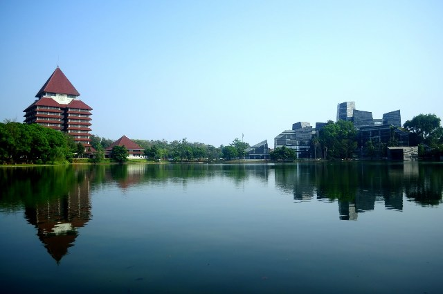
Universitas Indonesia (UI) adalah salah satu perguruan tinggi negeri terbaik di Indonesia, yang didirikan pada tahun 1849 dan dikenal sebagai kampus modern serta multikultural dengan reputasi akademik yang kuat. UI sering masuk dalam peringkat universitas terbaik di Indonesia dan dunia, serta dijuluki "Kampus Perjuangan" karena kontribusi mahasiswanya dalam sejarah bangsa.
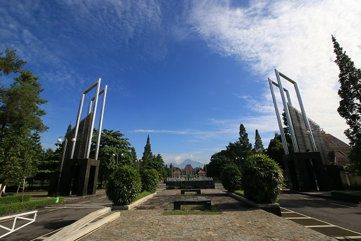
Universitas Gadjah Mada (UGM) adalah perguruan tinggi negeri pertama yang didirikan pemerintah Indonesia, pada 1949 di Yogyakarta, dikenal sebagai universitas perjuangan, kerakyatan, dan pembela Pancasila. Dengan reputasi yang kuat baik di tingkat nasional maupun internasional, UGM secara konsisten masuk jajaran universitas terbaik di Indonesia. Kampus ini berlokasi di Bulaksumur dan dikenal dengan julukan "Kampus Biru".
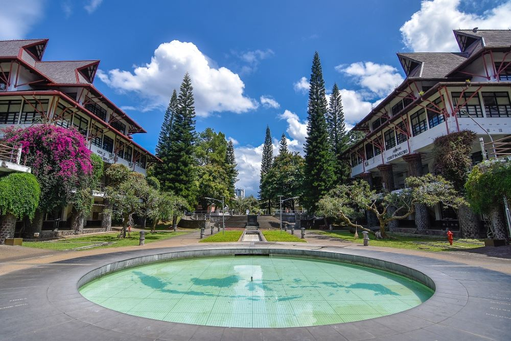
Institut Teknologi Bandung adalahsebuah perguruan tinggi negeri (PTN) yang merupakan sekolah tinggi teknik pertama di Indonesia yang didirikan pada 3 Juli 1920 sebagai de Technische Hoogeschool te Bandoeng. ITB memiliki misi untuk mengabdikan ilmu pengetahuan dan teknologi untuk kemajuan Indonesia.
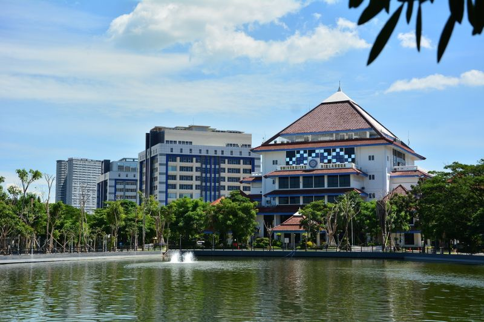
Universitas Airlangga (UNAIR) adalah salah satu perguruan tinggi negeri terbaik di Surabaya yang memiliki reputasi nasional dan internasional yang kuat. UNAIR secara konsisten meraih peringkat tinggi, bahkan menempati posisi ke-9 di dunia dalam Times Higher Education Impact Rankings 2025.
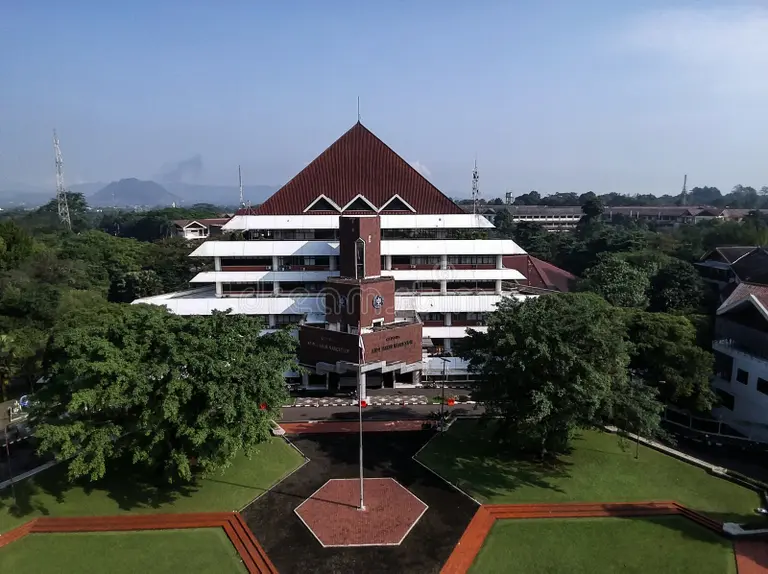
IPB University (Institut Pertanian Bogor) adalah salah satu perguruan tinggi negeri terkemuka di Bogor yang didirikan pada 1963 dan dikenal sebagai pusat keunggulan dalam bidang pertanian, biosains, serta inovasi. Kampus ini secara konsisten masuk dalam peringkat universitas terbaik di Indonesia dan dunia, bahkan diakui sebagai salah satu perguruan tinggi paling inovatif di tanah air.
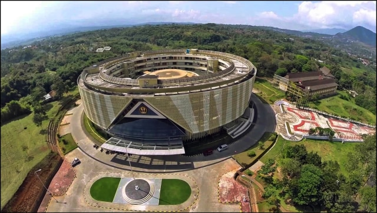
UNPAD adalah singkatan dari Universitas Padjadjaran, sebuah perguruan tinggi negeri di Indonesia yang didirikan pada 11 September 1957 dan berlokasi di Bandung dan Jatinangor, Jawa Barat. Universitas ini merupakan salah satu perguruan tinggi favorit di Indonesia dan telah mendapatkan berbagai peringkat, termasuk masuk lima besar kampus terbaik nasional dalam pemeringkatan QS World University Rankings: Sustainability 2024.
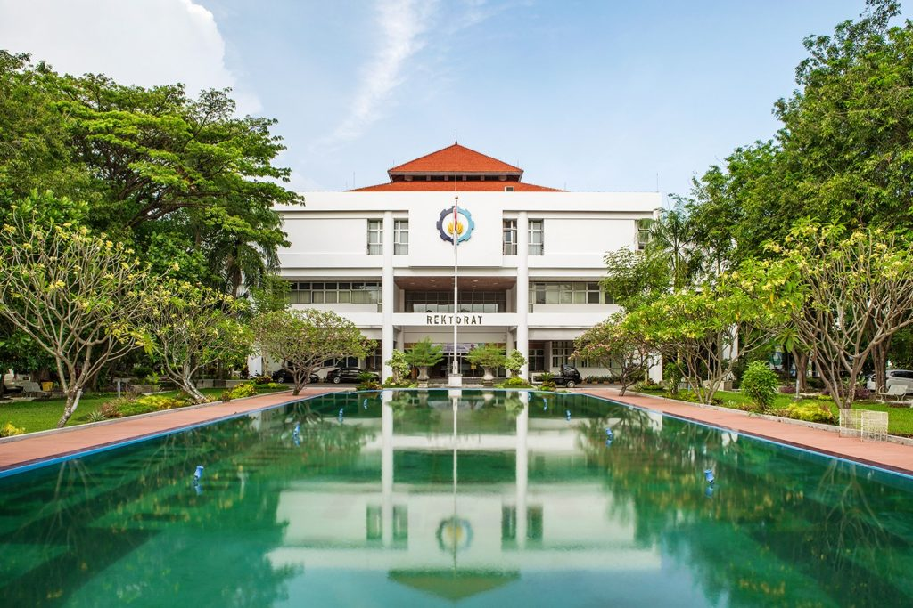
Institut Teknologi Sepuluh Nopember (ITS) adalah perguruan tinggi negeri di Indonesia yang didirikan pada 10 November 1957 dan berlokasi di Surabaya, Jawa Timur. Universitas ini merupakan salah satu perguruan tinggi favorit di Indonesia yang berfokus pada bidang sains dan teknologi. ITS dikenal akan kontribusinya dalam inovasi dan riset, serta konsisten masuk dalam jajaran kampus teknik terbaik nasional.
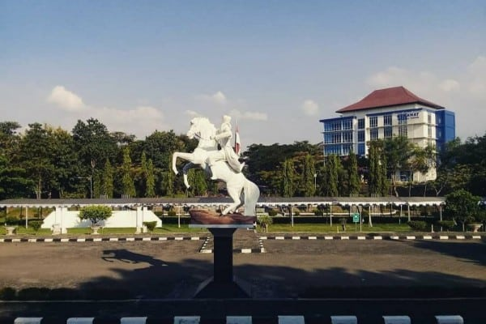
Universitas Diponegoro (Undip) adalah perguruan tinggi negeri di Indonesia yang didirikan pada 15 Oktober 1957 dan berlokasi di Semarang, Jawa Tengah. Universitas ini merupakan salah satu perguruan tinggi favorit di Indonesia dan secara konsisten menempati peringkat teratas dalam berbagai pemeringkatan nasional. Undip dikenal unggul dalam riset dan inovasi, serta telah mendapatkan berbagai penghargaan, termasuk masuk dalam jajaran sepuluh besar universitas terbaik di Indonesia.
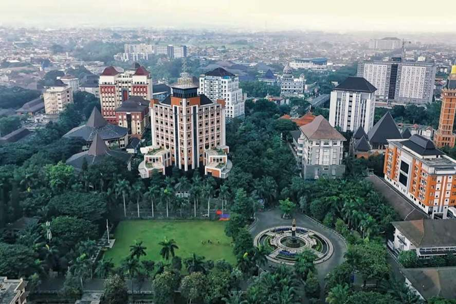
Universitas Brawijaya (UB) adalah perguruan tinggi negeri di Indonesia yang didirikan pada 5 Januari 1963 dan berlokasi di Kota Malang, Jawa Timur. Universitas ini merupakan salah satu perguruan tinggi favorit di Indonesia dan secara rutin masuk dalam jajaran sepuluh besar universitas terbaik nasional versi berbagai lembaga pemeringkatan, UB dikenal karena keunggulan akademiknya dalam berbagai disiplin ilmu, termasuk pertanian, kedokteran, dan ekonomi.
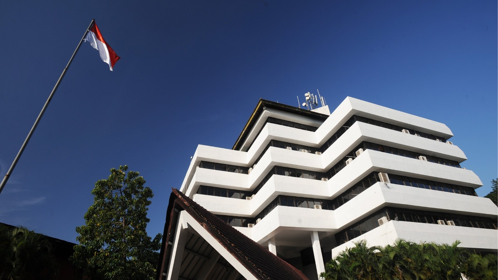
Universitas Hasanuddin (Unhas) adalah perguruan tinggi negeri di Indonesia yang didirikan pada 10 September 1956 dan berlokasi di Makassar, Sulawesi Selatan. Unhas merupakan universitas terbesar dan terkemuka di Indonesia bagian timur, serta menjadi salah satu perguruan tinggi favorit di Indonesia. Universitas ini dikenal unggul, khususnya dalam bidang maritim, pertanian, kehutanan, dan kesehatan, dan secara konsisten menempati posisi teratas dalam jajaran universitas terbaik nasional.
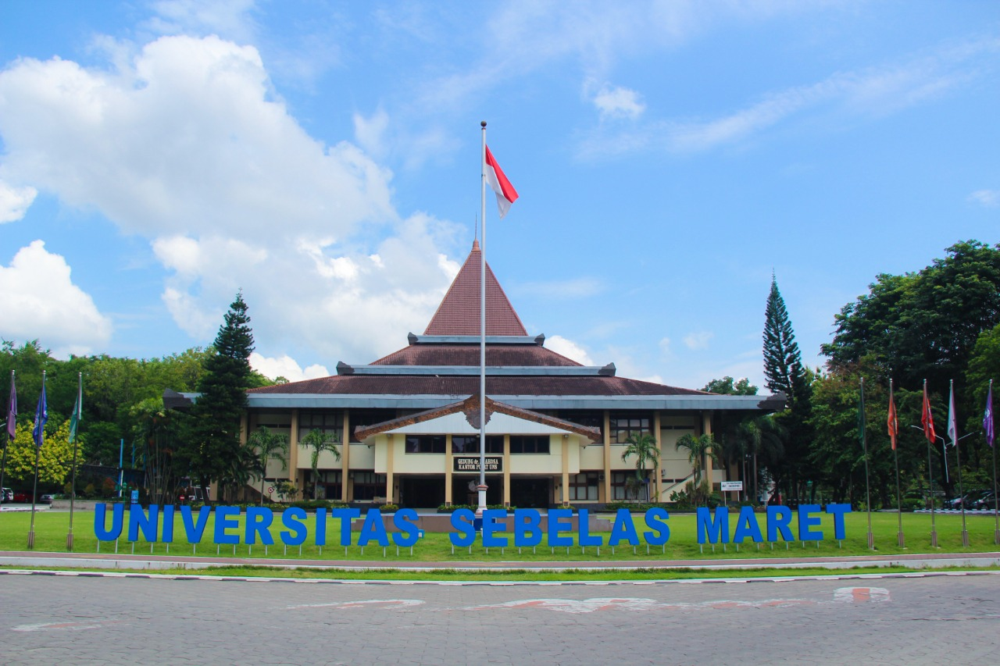
Universitas Sebelas Maret (UNS) adalah perguruan tinggi negeri di Indonesia yang didirikan pada 11 Maret 1976 dan berlokasi di Surakarta, Jawa Tengah. UNS merupakan salah satu perguruan tinggi favorit di Indonesia dan secara konsisten menempati peringkat teratas dalam berbagai pemeringkatan nasional, bahkan sering masuk dalam jajaran universitas terbaik. Universitas ini dikenal memiliki komitmen kuat dalam pengembangan pendidikan, riset, dan inovasi yang berfokus pada keberlanjutan dan peningkatan kualitas hidup masyarakat.
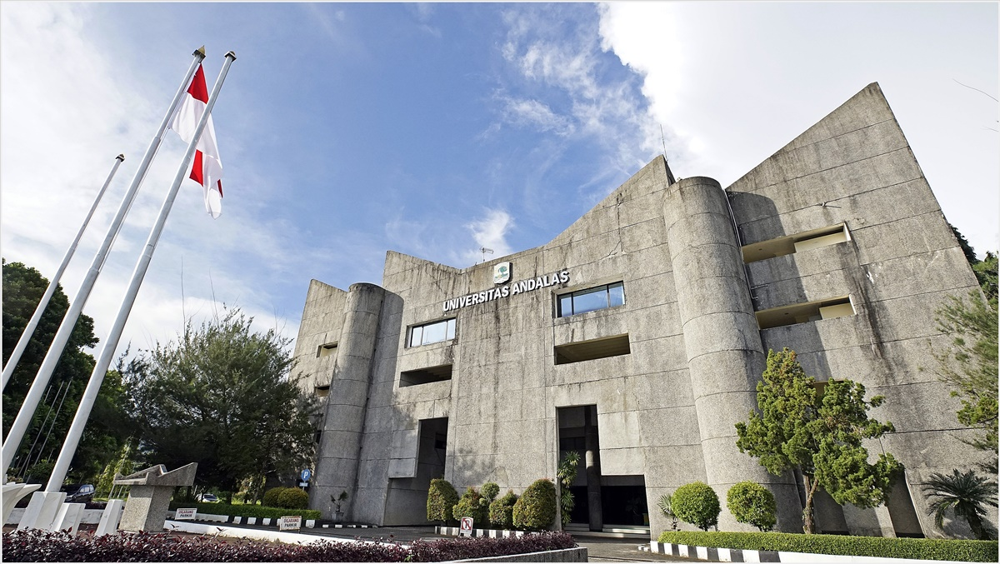
Universitas Andalas (Unand) adalah perguruan tinggi negeri di Indonesia yang didirikan pada 23 Desember 1955 dan berlokasi di Padang, Sumatera Barat. Unand merupakan universitas tertua di luar Pulau Jawa dan telah mendapatkan akreditasi unggul dari BAN-PT. Universitas ini dikenal sebagai salah satu perguruan tinggi favorit di Indonesia dengan fokus kuat pada riset bidang pertanian, kesehatan, dan ilmu sosial, serta secara konsisten masuk dalam jajaran universitas terbaik nasional, khususnya di wilayah Sumatera.